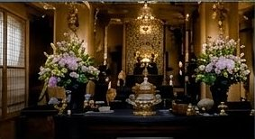
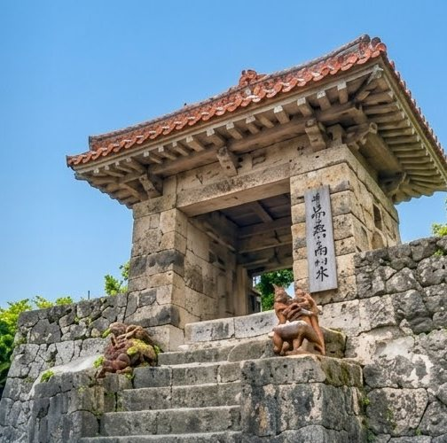
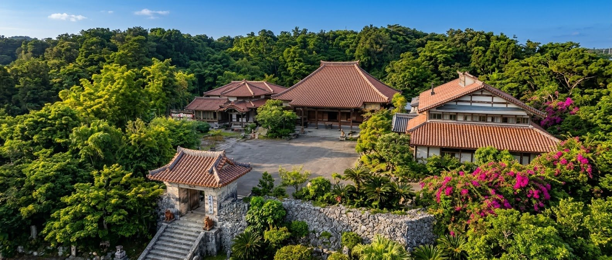
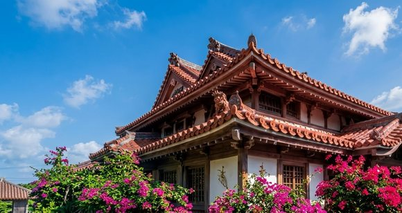
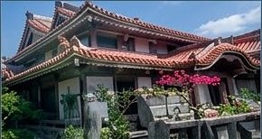
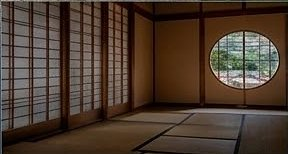
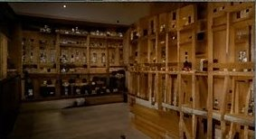
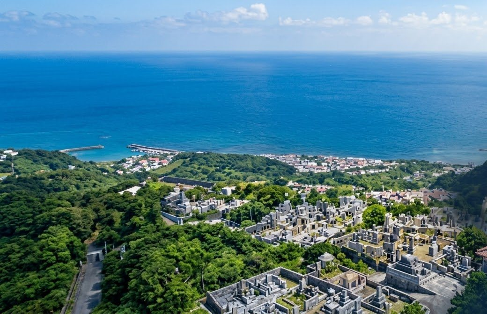

本 堂
Hondō
御本尊・不動明王をおまつりする伽藍の中心。ご本葬をはじめ、大切な節目の御法要を、荘厳のととのった空間で執り行っていただけます。
使用料200,000円お布施すべて込み
臨済宗妙心寺派 太平山 安國寺

手を合わせる、
それだけで整う場所へ。
琉球の古都・首里。石畳の坂をのぼり、赤瓦の家並みを抜けたところに、安國寺の山門は静かに開いております。 天順元年、この地に一寺が建てられてよりおよそ五百七十年。王府の時代も、戦火の時代も、そしていまも、 ここは首里に生きる人びとの祈りを受けとめてまいりました。
堂内に一歩お入りいただくと、外の喧噪がふっと遠のきます。とくべつな作法は要りません。 ご葬儀やご法要はもとより、納骨堂・永代供養、霊園のご相談まで、どうぞ肩の力を抜いてお訪ねください。

山号を太平山、御本尊に不動明王をおまつりする臨済宗妙心寺派の禅刹です。 創建は天順元年（一四五七）。足利尊氏公が全国に安国寺を建てた「一国一寺」の例にならい、 開山・熙山周雍禅師によって開かれました。
去る沖縄戦で伽藍のことごとくを焼失いたしましたが、檀信徒の皆さまのお力添えにより再建。 いまも首里十二カ所巡りの酉年の寺として、多くの方にお参りをいただいております。
ご葬儀・ご法要の規模に応じて、四つのお堂・お部屋をお選びいただけます。
境内には駐車場を備えております。

Hondō
御本尊・不動明王をおまつりする伽藍の中心。ご本葬をはじめ、大切な節目の御法要を、荘厳のととのった空間で執り行っていただけます。

Jūnishidō Hall
十二支の守り本尊にちなむお堂に併設した式場です。首里十二カ所巡りの札所としての由緒を映した、落ちついたしつらえ。ご親族中心のご葬儀に適しております。

Amidadō Hall
四十九日、一周忌、三回忌など、年回のご法事に多くお使いいただいているお部屋です。ご会食の席としてもご利用いただけます。

Tsuya Room
故人さまとご家族が、最後の夜を静かにお過ごしいただくためのお部屋です。お付き添いのままご宿泊いただけます。
| 区分 | 料金 | 備考 |
|---|---|---|
| 本堂 | 200,000円 | お布施すべて込み |
| 十二支堂ホール | 130,000円 | お布施すべて込み |
| 阿弥陀堂ホール | 40,000円 | 法事使用料・お布施すべて込み |
| 通夜室 | 30,000円 | 一泊二日／追加一泊 10,000円 |
| 納骨堂 | 30,000円〜40,000円 | 年間使用料（三種）※消費税別 |
| 永代供養 | ご相談 | 随時うけたまわっております |
※ 表示は目安の金額です。ご事情やご希望により承り方が異なる場合がございますので、まずはお気軽にご相談ください。
※ 納骨堂使用料には別途消費税を申し受けます。

「お墓を継ぐ人がいない」「遠方に住んでいて、お参りがむずかしい」。 近ごろ、そうしたご相談をいただくことが増えました。当山では御堂のうちに納骨堂をご用意し、 またお申し出により永代のご供養をお引き受けしております。 どうぞ一人で抱えこまず、まずはお話をお聞かせください。
※ いずれも年間の使用料です。別途消費税を申し受けます。お棚の位置に応じて三種をご用意しております。

清ら結
CHURAYUI — 摩文仁 国定公園内
潮風のとどく高台に、海をひろく見渡す園地。
五百七十年の法灯を継ぐ安國寺が、永代にわたっておまつりいたします。
I
安國寺が責任をもって末永くおまつりいたします。承継のご心配は要りません。
II
摩文仁の国定公園内。潮風と光のとどく高台に区画をご用意しております。
III
園内はバリアフリー。休憩所・水場・駐車場を整え、お参りの負担をやわらげます。
お寺は、法事のときだけの場所ではありません。
檀信徒の方でなくても、はじめての方でも、どうぞ。
月 一 回
背筋をのばし、呼吸をかぞえる。ただそれだけの時間です。作法は当日ご案内いたしますので、手ぶらでお越しください。
月 一 回
お堂の床にマットを敷いて。からだをほぐし、息をととのえる。坐禅とあわせてご参加いただけます。
不 定 期
禅のことば、暮らしのなかの仏教。かたくならず、お茶を飲みながらのひとときです。

首里の町にはむかしから、十二支それぞれの守り本尊をおまつりする十二の札所をめぐる習わしがございます。 安國寺は、そのうち酉年生まれの方の札所。御本尊・不動明王が、一年の息災をお守りくださいます。
年のはじめには、酉年の方はもちろん、多くの方が手を合わせにお越しになります。 御朱印・お守りについては、寺務所までお問い合わせください。
ご葬儀・ご法要のご依頼、納骨堂や永代供養、霊園のご相談。
仏事のならわしについてのご質問だけでも結構です。